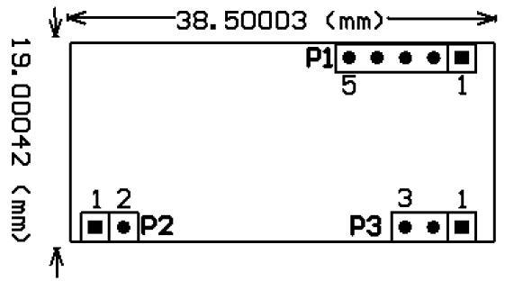
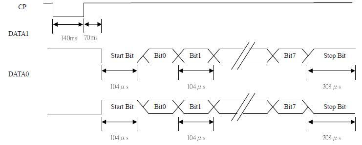
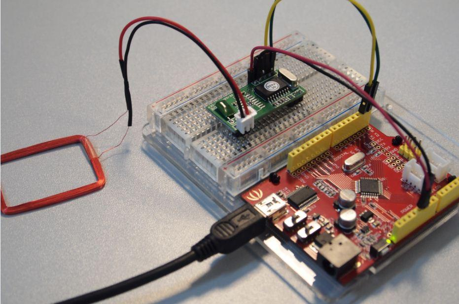

RDM 125KHz card mini-module is designed for reading code from 125KHz card compatible read-only tags and read/write card . It can be applied in office/home security, personal identification, access control, anti-forgery, interactive toy and production control systems etc.
Model: RFR101A1M
http://www.seeedstudio.com/depot/images/product/P1240147.jpg
Note: Module will notify whenever 125khz tag approaches, tag serial number will be send via TX pin. Easy way for a RFID module on MCU projects or PC connnection via UartSB.
May include key specification and other specifications.
| Frequency | 125KHz |
| Baud Rate | 9600 (TTL Electricity Level RS232 format) |
| interface | Weigang26 Or TTL Electricity Level RS232 format |
| Power supply | DC 5V（±5%） |
| Current | <50Ma |
| Operating range | >50mm(Depend on Card/Tag shape, manufacturer) |
| Expand I/O port | N/A |
| Indication light | N/A |
| Working temperature | -10℃~ +70℃ |
| Storage temperature | -20℃~ +80℃ |
| Max. humidity | Relative humidity 0 ~ 95% |
| Size | 38.5mm ×19mm×9mm |
Look the image below(Mechanic Dimensions), and check the pin definition list here:
Pin Definition : P1: PIN1 TX PIN2 RX PIN3 PIN4 GND PIN5 +5V(DC) P2: PIN1 ANT1 PIN2 ANT2 P3: PIN1 LED PIN2 +5V(DC) PIN3 GND

| 02 | 10ASCII Data Characters | Chechsum | 03 |
Example: card number: 62E3086CED


Output date(HEX): 02 | 30 31 30 30 30 37 33 34 45 30 | 44 32 | 03
->Change to Decimal
CardNumber Decimal: 48 49 48 48 48 55 51 52 69 48
CheckSum Decimal: 68 50
->Refer to ASCII table,get Ascill value
CardNumber Ascill: 0 1 0 0 0 7 3 4 E 0
CheckSum Ascill : D 2
(01H) xor (00H) xor (07H) xor (34H) xor (E0H) = D2H
Connect RX/TX to Arduino UART port , Uart demo code :
void setup()
{
Serial.begin(9600);
}
void loop()
{
if(Serial.available())
{
while(Serial.available())
Serial.write(Serial.read());
}
}If you have questions or other better design ideas, you can go to our forum or wish to discuss.
| Revision | Descriptions | Release |
|---|---|---|
| v1.0 | Initial public release | Nov 03, 2008 |
Click here to buy: http://www.seeedstudio.com/depot/125khz-rfid-module-uart-p-171.html?cPath=144_153. This product is off the shelf if you can not get to by the link. You can buy the high version Electronic brick - 125Khz RFID Card Reader at http://www.seeedstudio.com/depot/electronic-brick-125khz-rfid-card-reader-p-702.html?cPath=48_52.
This documentation is licensed under the Creative Commons Attribution-ShareAlike License 3.0 Source code and libraries are licensed under GPL/LGPL, see source code files for details.
{kind=link}